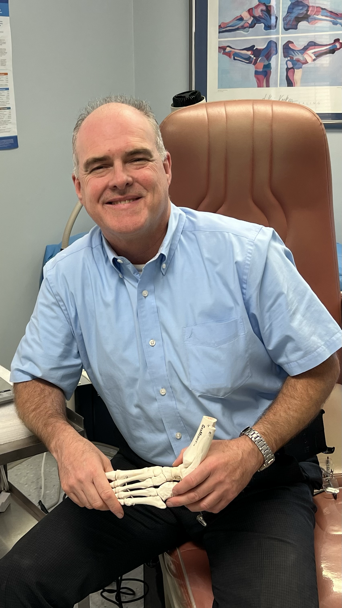

Board Certified Podiatrist · FACPM · DABPM
Delivering excellence in podiatric care for over 30 years across Somers, Armonk, and Westchester County.
Dr. John O'Hanlon has been in private practice in Armonk and Somers since 1991, providing comprehensive podiatric care to patients of all ages throughout Westchester County. A board-certified podiatrist and foot surgeon, he specializes in foot, ankle, and leg conditions with treatment plans tailored to each patient.
Combining advanced medical techniques with a compassionate approach, Dr. O'Hanlon focuses on both treatment and prevention. He educates patients on maintaining foot health through proper hygiene, footwear, and routine check-ups — whether addressing acute injuries or managing chronic conditions, his goal is to improve mobility and quality of life.
Since 1991, Dr. O'Hanlon has been a staff surgeon at Northern Westchester Hospital, where he served as Chief of the Division of Podiatric Medicine and Surgery from 1997 to 2008.
United States Naval Reserve, Lieutenant, Medical Services Corps (1997–2005), Honorable Discharge.
Modern facilities, convenient locations, and care built around each patient.
State-of-the-art diagnostic and treatment technology for effective, efficient care across a wide range of podiatric conditions.
Offices in Somers and Armonk serve patients throughout Westchester County with accessible, quality podiatric care.
We listen to your concerns, evaluate thoroughly, and develop treatment plans tailored to your needs and lifestyle.
At Armonk-Somers Podiatry, our mission is to improve the quality of life for our patients through exceptional podiatric care.
Honored by our community as a Nextdoor Neighborhood Faves winner for 2024 — a reflection of our commitment to exceptional podiatric care and service across Westchester County.
Schedule your appointment today at either our Somers or Armonk location.
Book Appointment